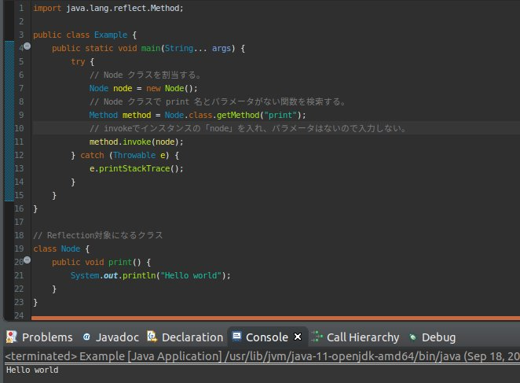
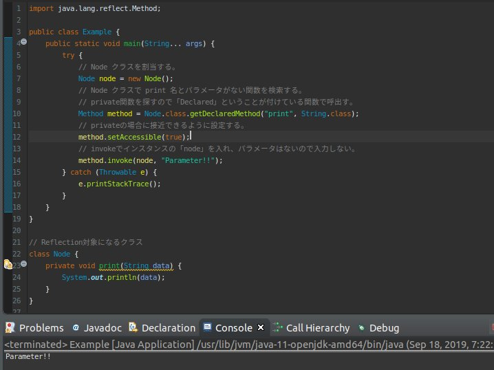
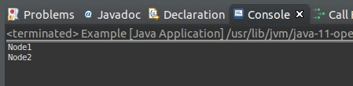
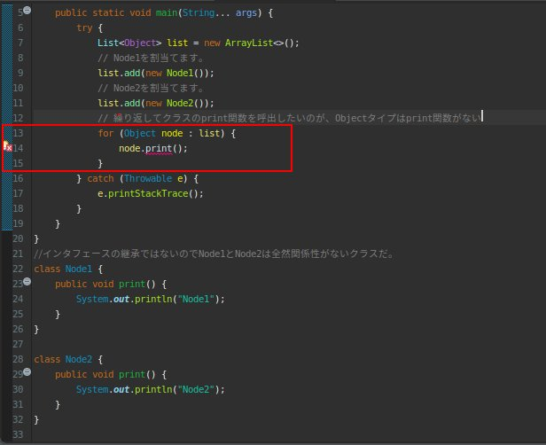
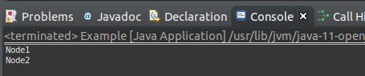

こんにちは。明日です。
このページにはReflection機能の中でメソッド(Method)に関して調べてみました。
前述で「Java」の「Reflection」のクラスに関して説明しました。
そこでコンストラクタが「private」になっていっても呼出しができるし、「String」でクラスを探し、呼出しもできました。
メソッド編でも似ているな形で使用します。
まず、「String」式で関数を検索することです。
import java.lang.reflect.Method;
public class Example {
public static void main(String... args) {
try {
// Node クラスを割当する。
Node node = new Node();
// Node クラスで print 名とパラメータがない関数を検索する。
Method method = Node.class.getMethod("print");
// invokeでインスタンスの「node」を入れ、パラメータはないので入力しない。
method.invoke(node);
} catch (Throwable e) {
e.printStackTrace();
}
}
}
// Reflection対象になるクラス
class Node {
public void print() {
System.out.println("Hello world");
}
}

上の例を見れば「Node」クラスを宣言して「getMethod」関数で「print」関数を探します。
後「invoke」関数にインスタンスを入れ、実行します。
そして「private」の関数を実行します。
import java.lang.reflect.Method;
public class Example {
public static void main(String... args) {
try {
// Node クラスを割当する。
Node node = new Node();
// Node クラスで print 名とパラメータがない関数を検索する。
// private関数を探すので「Declared」ということが付けている関数で呼出す。
Method method = Node.class.getDeclaredMethod("print", String.class);
// privateの場合に接近できるように設定する。
method.setAccessible(true);
// invokeでインスタンスの「node」を入れ、パラメータはないので入力しない。
method.invoke(node, "Parameter!!");
} catch (Throwable e) {
e.printStackTrace();
}
}
}
// Reflection対象になるクラス
class Node {
private void print(String data) {
System.out.println(data);
}
}

上の例をみれば、「private」タイプの関数を探すようには「getMethod」ではなく、「getDeclalredMethod」で探しますね。それを検索されると接近設定を「true」に変換して「invoke」で実行します。
上の例では関数でパラメータが付いているので、検索する時にパラメータタイプは「String」で「invoke」をする時にも実際にデータを入れます。
結果はそのパラメータがコンソールで出力しますね。
次は「Reflection」のメソッドで応用部分ですが、同じ名の関数があるクラスたちを集まって実行する方法です。
実は「Interface」で抽象してすることが原則ですが、実務では「Interface」で結ばない場合もあるので、様々で使える方法です。
import java.util.ArrayList;
import java.util.List;
public class Example {
public static void main(String... args) {
try {
// インターフェースでListで宣言する。
List<Node> list = new ArrayList<>();
// Node1を割当てます。
list.add(new Node1());
// Node2を割当てます。
list.add(new Node2());
// 繰り返してクラスのprint関数を呼出す。
for (Node node : list) {
node.print();
}
} catch (Throwable e) {
e.printStackTrace();
}
}
}
interface Node {
void print();
}
class Node1 implements Node {
public void print() {
System.out.println("Node1");
}
}
class Node2 implements Node {
public void print() {
System.out.println("Node2");
}
}

上の結果は同然だと思いますね。
Node1のクラスとNode2のクラスを同じインタフェースで派生して呼出すのは当たり前だと思います。
とはいえ、Node1のクラスとNode2のクラスがインタフェースを継承しなかった場合はどうでしょう。
別のクラスなので、Listで指定クラス自体からできないですね。違いました。
「Object」タイプで結べますね。

上のみれば、Eclipseでエラーが発生しました。なぜなら、「Object」タイプは「print」関数がないからです。
それを「Reflection」を利用して関係性がなくても呼び出せます。
import java.lang.reflect.Method;
import java.util.ArrayList;
import java.util.List;
public class Example {
public static void main(String... args) {
try {
List<Object> list = new ArrayList<>();
// Node1を割当てます。
list.add(new Node1());
// Node2を割当てます。
list.add(new Node2());
// 繰り返してクラスのprint関数を呼出したいのが、Objectタイプはprint関数がない
for (Object node : list) {
//クラスタイプで「print」関数を探し
Method method = node.getClass().getMethod("print");
// invoke関数で実行
method.invoke(node);
}
} catch (Throwable e) {
e.printStackTrace();
}
}
}
//インタフェースの継承ではないのでNode1とNode2は全然関係性がないクラスだ。
class Node1 {
public void print() {
System.out.println("Node1");
}
}
class Node2 {
public void print() {
System.out.println("Node2");
}
}

上の例をみれば、各オブジェクトからクラスタイプを持って来て「getMethod」で関数を探します。
探す時には「String」タイプでできるので「print」ということが掛けばメソッドを抽出ができます。
そのことで「invoke」関数で実行すれば、インタフェースがなしでも似てるふうに実行されます。
実際にはインタフェースによってプログラムを作成することが一番ですが、できない状況の場合に「Reflection」を利用して組むのもできますね。
- [Java] Java servletでインスタンスを初期する方法2019/10/17 07:15:48
- [Java] Spring web frameworkで発生する文字化けのEncoding設定2019/10/16 07:32:55
- [Java] Web Spring frameworkでfilter設定2019/10/15 20:12:35
- [Java] Web serviceのweb.xmlでエラーページ設定2019/10/14 20:13:44
- [Java] JPAのDAOをFactoryパターンで管理する方法2019/10/13 22:55:52
- [Java] JPAのSpring frameworkで依存性注入する方法2019/10/13 00:40:08
- [Java] JPAでDAOを生成する方法2019/10/11 07:30:14
- [Java] JPAでトランザクションの使用方法とオブサーバーパターンで共通トランザクション関数を作り方2019/10/10 07:29:43
- [Java] JPAのQuery を作り方2019/10/09 07:34:08
- [Java] JPAのEntityクラス設定(Cascade, fetch)2019/10/08 07:43:33
- [Java] JPAでpersistance.xml設定とentityクラス設定(@GeneratedValue設定)2019/10/07 07:38:13
- [Java] EclipseでJPAフレームワーク設定する方法2019/10/04 19:24:43
- [Java] Web spring frameworkのJSPで使う言語 JSTL - XML2019/10/03 20:02:06
- [Java] Web spring frameworkのJSPで使う言語 JSTL - 関数、データベース2019/10/02 21:00:22
- [Java] Web spring frameworkのJSPで使う言語 JSTL - コアー、フォーマッティング2019/10/01 21:48:08
- [C#] Base64のエンコード、デコードする方法2020/03/26 02:19:50
- [Java] 日付フォーマット(SimpleDateFormat)を使う方法2020/03/25 00:36:53
- [Java] サーブレット(Servlet)の環境でファイルアップロード(プログレスバーでファイルアップロード状態を表示する方法)する方法2020/03/24 00:48:21
- [Java] Spring環境でファイルアップロード(プログレスバーでファイルアップロード状態を表示する方法)する方法2020/03/22 23:15:12
- [Java] FTPに接続してファイルをダウンロード、アップロードする方法(FTPClient)2020/03/20 02:44:36
- [Window] WindowでFTPサーバを構築する方法2020/03/19 03:27:22
- [Java] JSPのSpring環境でschedulerのcronを使う方法2020/03/18 00:24:32
- [Java] POIを利用してExcelを扱う方法2020/03/17 01:48:00
- [Java] PDFを出力する方法(itextpdf)2020/03/13 00:47:31
- [Java] ログライブラリ(log4j)を使う方法2020/03/12 00:54:39
- [Java] Jsonタイプのデータを使う方法(Gsonライブラリ)2020/03/11 00:30:15
- [Java] Base64をエンコード、デコードする方法2020/03/09 10:24:01
- [Java] cmdコマンドを実行するための方法2020/03/06 18:01:10
- [Java] メール(javax.mail)を発送する方法2020/03/05 20:07:49
- [Java] クラス複製(Clonable, Reflection)2020/03/05 00:03:19